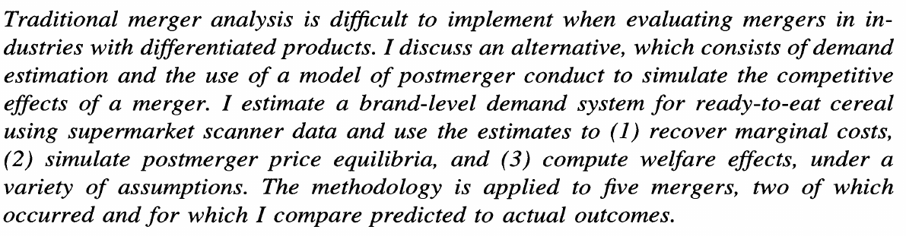
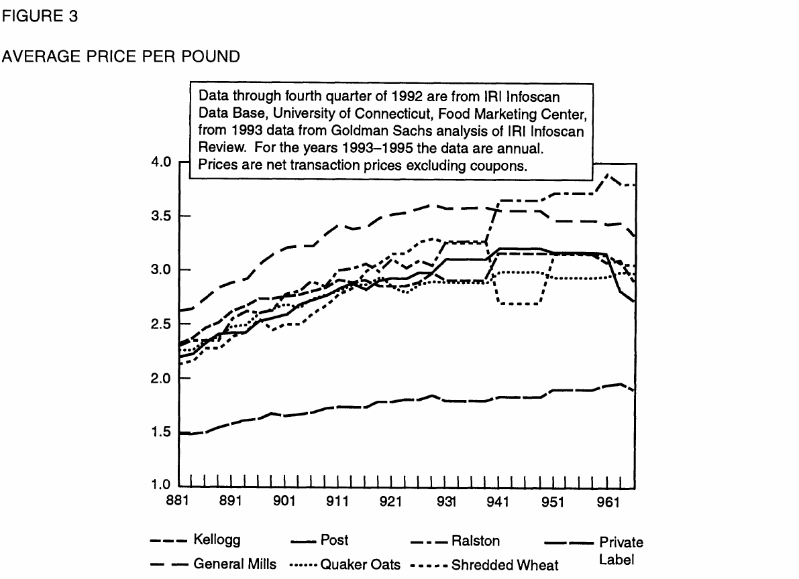
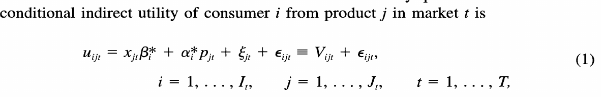
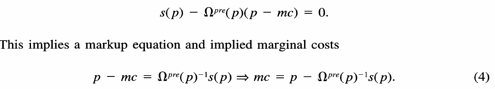
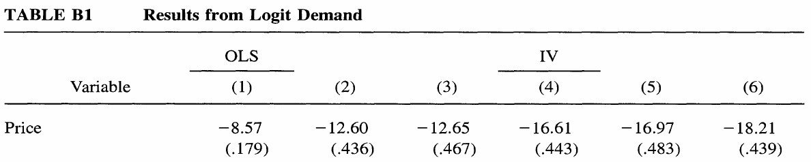
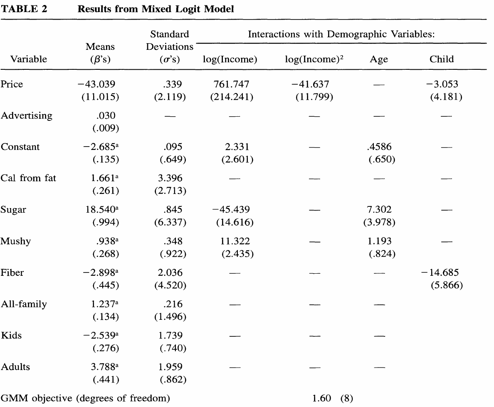
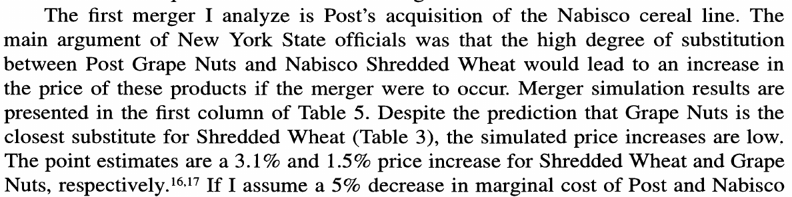

Lecture 6.2: Structural Models
AREC 570 / ECON 530 · Unit 6
Before class
Assigned
- Nevo and Whinston, “Taking the Dogma out of Econometrics: Structural Modeling and Credible Inference” (Nevo and Whinston 2010)
- Nevo, “A Practitioner’s Guide to Estimation of Random-Coefficients Logit Models of Demand” (optional) (Nevo 2000a)
Readings and course handouts are available on Canvas.
Also used in these slides
- Woerman, ResEcon 703 Week 1 slides, the source of this lecture’s structure (Woerman 2022)
- Example paper: Nevo, mergers in ready-to-eat cereal (Nevo 2000b)
- Timmins and Schlenker, from Lecture 6.1 (Timmins and Schlenker 2009)
- Bellemare, on notation (Bellemare 2020)
- BLP demand: Berry (1994); Berry et al. (1995); Nevo (2001)
- Miller and Weinberg (2017); Conlon and Gortmaker (Conlon and Gortmaker 2020)
Latin letters mark what you observe; Greek letters mark what you estimate
| Latin letters | Greek letters | |
|---|---|---|
| Examples | , , , , | alpha, beta, gamma, delta, epsilon |
| Used for | Variables you observe in the data | Parameters you estimate, and the error term you never observe |
- Latin letters are the letters of the English alphabet
- Fixed effects are parameters, so they get Greek letters: ,
- A Greek letter tells the reader the term is estimated
Source: Bellemare (2020), Section 5.1.
Subscripts tell the reader the level at which each term varies
- One letter per dimension, used the same way throughout the paper: county, state, year
- Order from the smallest unit to the largest, with time last
- A term carries only the subscripts it varies over: a state policy is
- A fixed effect’s subscript says what it holds constant: county, year
- The outcome’s subscripts state the unit of observation: a county in a year
What is structural econometrics?
A structural model recovers the parameters of behavior
- Definition: any empirical model that recovers the parameters of behavioral functions, such as demand and supply equations, utility functions, or cost structures
- It starts from a theoretical model and states what the researcher can and cannot observe
- What cannot be observed becomes a structural error, backed out of observed behavior
- The parameters are estimated with a procedure such as GMM or maximum likelihood
Source: Timmins and Schlenker (2009), Section 2.
A structural econometric model has three parts
- Economic theory: relates observed endogenous variables to observed exogenous variables and unobserved variables , through a functional form and unknown parameters :
- Statistical assumptions: a joint distribution for what is observed and what is not,
- Estimating equation: what the data are matched to, such as a likelihood function or a set of moment conditions
In the example later in this lecture: comes from utility and profit maximization, includes unobserved product characteristics, and the estimating equation is a set of moment conditions.
Source: adapted from Woerman (2022), slide 11.
The term “reduced form” has two meanings
- Textbook meaning: solve a system of equations so the outcome depends only on exogenous variables
- Recent meaning: program evaluation or treatment effects, with attention to how the exogenous variable was assigned
- Avoids as many structural assumptions as possible, and still requires assumptions of its own
- The two approaches overlap, and many papers combine them
The designs from Lecture 6.1 are reduced form in the recent sense: fixed effects, quasi-experiments, regression discontinuity, and randomization.
One question answered both ways: how does a merger change prices?
Reduced form. Compare prices of the merging firms’ products with prices of other products, before and after a merger that already happened. The estimate is the price effect of that merger. It does not say why prices changed, and it does not apply directly to a different merger.
Structural. Estimate how consumers substitute between products and how firms set prices, recover marginal costs, and solve for prices under the new ownership. The answer applies to a merger that has not happened, and it comes with a welfare measure. It holds products, firms, and pricing behavior fixed, and it needs credible instruments.
The example in this lecture, Nevo (2000b), takes the structural route.
Why add structure?
Structure lets a paper estimate unobserved parameters, simulate counterfactuals, and test theories
- Unobserved parameters: marginal utility, marginal cost, risk preferences, discount rates, switching costs
- Counterfactuals: what would happen if the setting changed, including new policies and feedback loops
- Welfare and who bears the cost: effects in dollars, through a utility function, by type of consumer
- Competing theories: for example, do firms set prices or quantities?
Should you always add structure? The answer depends on the question, the data, and the setting
- Costs of structure: it needs economic theory that fits the setting, and often many assumptions to connect that theory to the data
- If those assumptions are unrealistic, the results are not credible, and the assumptions may be hard for readers to see
- Strengths of reduced form, with a good research design: causal estimates, fewer assumptions, and transparent estimation and results
- Without a good research design, the reduced-form advantage is smaller
Source: Woerman (2022), slide 17.
The two approaches differ in what they estimate and what they assume
| Reduced form | Structural | |
|---|---|---|
| Estimates | High-level response parameters | Behavioral parameters, such as preferences and costs |
| Credibility comes from | The source of variation | The source of variation and the economic model |
| Best suited to | Establishing causality for a change in the data | Feedback loops, large policy changes, and welfare |
| Main assumptions | How treatment was assigned | Functional form, unobservables, and how agents behave (such as profit maximization) |
| Counterfactual | A comparison group, for a change in the data | A simulation of the model, including changes not in the data |
| Main limit | Harder to extend to changes not observed | Conclusions depend on the model being right |
Source: Timmins and Schlenker (2009), Sections 1 and 4.
Structure and credible design are complements
- Structure can add credibility when the question involves another setting, an out-of-sample counterfactual, or welfare
- Good data help both approaches: when the data do more of the work, the assumptions do less
- Combining them: a credible design estimates the overall effect; a structural model checks it and identifies the mechanism
- Reduced-form estimates can be inputs to a model or targets it must reproduce, and retrospective studies check model predictions
How to construct a structural model
Constructing a structural model takes three steps
- Start with economic theory: the setting (markets, agents, information), the primitives (preferences, technology, endowments), exogenous variables, objectives and choice variables, and an equilibrium concept
- Turn it into an econometric model: add unobservables for what the theory leaves out, such as researcher uncertainty, agent uncertainty, optimization error, or measurement error
- Estimate it: choose functional forms, distributional assumptions, an estimation method, and specification tests
Source: Woerman (2022), slides 23 and 24.
A simple structural model: a Cobb-Douglas production function
We observe output , capital , and labor , and want the output elasticities of capital and labor.
- Theory: , which in logs is
- Unobservable: add for measurement error, with
- Estimation: OLS on
Is the assumption in Step 2 reasonable? If includes productivity the farmer knows when choosing inputs, then and are endogenous.
Source: adapted from Woerman (2022), slide 25.
A more complex model: logit demand, inverted into a linear regression
- Theory: consumer buys the product with the highest utility, , or buys nothing
- Unobservables: , product characteristics the researcher does not observe, and , an extreme-value shock for each consumer
- Estimation: the shock gives a formula for market shares, which inverts into a linear equation; price needs instruments
Every consumer has the same tastes, and .
Even more complex: with many products, demand needs structure on substitution
A log-log demand system estimates one equation for each product , with every price on the right side:
- : the percent change in the quantity of when the price of rises 1 percent
- With 100 products, a log-log demand system has at least 10,000 parameters
- BLP describes each product by its characteristics, so the number of parameters depends on the number of characteristics
- It uses market-level data on prices and quantities, and it allows for endogenous prices
Logit and random-coefficients logit differ in whether tastes vary across consumers
| Logit | Random-coefficients logit (BLP) | |
|---|---|---|
| Tastes | Same for everyone: , | Vary across consumers: , |
| How consumers differ | Only through the shock | Through tastes and the shock |
| Market shares | A closed-form formula | An average over consumers, computed numerically |
| Substitution | In proportion to market shares | Toward products with similar characteristics |
| Estimation | Linear instrumental-variables regression | GMM with a numerical search |
Logit is the special case of random coefficients in which every consumer has the same tastes.
Source: Nevo (2000a), pages 522 to 526.
Types of structural models you may see
| Topic | Structural models | What they recover |
|---|---|---|
| Consumer demand | Demand systems (AIDS, QUAIDS); discrete choice (logit to BLP) | Elasticities, substitution, welfare |
| Nonmarket values | Hedonic; Ricardian; travel cost; choice experiments | Willingness to pay |
| Producers | Production, cost, and profit functions; stochastic frontier | Returns to scale, efficiency |
| Firms and markets | Conduct and markups; equilibrium displacement | Markups, pass-through, incidence |
| Dynamics and risk | Real options; dynamic discrete choice; risk preferences and insurance demand | Value of waiting, risk aversion |
| Trade and policy | Structural gravity; spatial equilibrium; CGE | Trade costs, economy-wide effects |
Each method has an example specification on the methods map.
Structural estimation
Some structural models reduce to a regression; others need structural estimation
- Regression: the Cobb-Douglas model (OLS) and logit demand (instrumental variables). Fast, transparent, and easy to interpret
- Structural estimation: the model has no linear form, so the parameters are chosen to match the data directly
- Maximum likelihood: the parameters that make the observed data most probable under the model
- GMM (generalized method of moments): the parameters that bring the model’s moment conditions closest to zero
- Simulation versions of both, when the model’s predictions have no formula and are averaged over simulated agents
- BLP is in the second group: shares are averages over simulated consumers, and GMM chooses the taste parameters
Source: Woerman (2022), slides 28 and 29.
Numerical estimation can stop early, so report how the model was solved
Estimation searches for the parameters that minimize the GMM objective. The optimizer stops when it is close enough, and that stopping rule is a choice.
| Same model, same data | Mean price coefficient | Mean own-price elasticity |
|---|---|---|
| Loose stopping rule (1E-4), as published | −32.4 | −3.70 |
| Tighter stopping rule (1E-5), as in our demo | −62.7 | −3.62 |
| Tighter stopping rule and better instruments | −27.5 | −3.69 |
- How to read this: the coefficient moves a lot, and the elasticity barely moves
- Report the optimizer, tolerances, starting values, and integration method
- Try several optimizers and starting values, and report the quantities that matter
Source: Conlon and Gortmaker (2020), Table 7.
Example: Nevo (2000), mergers in ready-to-eat cereal
Research question: what are the price and welfare effects of cereal mergers?

- Two completed mergers: Post (owned by Kraft) bought Nabisco’s cereals in 1992, approved in 1995 after a challenge by New York; General Mills bought Chex from Ralston in 1996
- One called off: General Mills’ 1992 bid for Nabisco, withdrawn over antitrust concerns
- Two hypothetical: Quaker Oats with Kellogg, and Quaker Oats with General Mills
Source: Nevo (2000b), pages 395 to 396.
Setting: market concentration does not show how close brands are as substitutes
- Empirical question: how much would prices rise if two cereal firms merged?
- Traditional merger analysis: define the market, then compute a concentration measure, such as the HHI, from market shares
- Limit: with differentiated products the market is hard to define, and the HHI is a reasonable guide only if products are equally spaced in their characteristics
- Portfolio effect: a firm that owns two substitutes charges more than two separate firms would, because some sales lost by one brand go to the other
- Nevo’s approach: estimate how much brands substitute, such as Post Grape Nuts and Nabisco Shredded Wheat, then simulate post-merger prices
Data: supermarket scanner data on 24 brands in 45 cities over 20 quarters
- Prices and market shares: IRI Infoscan scanner data, 1988 to 1992, by brand, city, and quarter; a market is a city in a quarter (900 markets)
- Market size: one serving per person per day; the share of the outside good is whatever is left
- Product characteristics: calories from fat, sugar, fiber, sogginess in milk (“mushy”), and market segment, read from cereal boxes
- Advertising: national media spending by brand
- Demographics: income, age, and children, drawn from the Current Population Survey for each city
- Instruments: prices of the same brand in other cities, and cost proxies such as city density and supermarket wages
Source: Nevo (2000b), pages 404 to 405 and 417.
Descriptive evidence: cereal prices rose faster than inflation before the mergers

- From 1988 to 1992, average cereal prices rose about 35%, while the CPI rose 21%
- Shredded Wheat rose 32% from mid-1990 to the merger announcement, against 7% to 12% for other companies
- After the merger, Shredded Wheat fell 8%, similar to other brands
- Nevo: “One has to be careful in drawing conclusions from these facts, since many things happened during this period”
Source: Nevo (2000b), pages 398 to 399, Figure 3.
A reduced-form design Nevo could have run: difference in differences
Nevo has no reduced-form regression. For the Post-Nabisco merger, it could look like this:
- Coefficients of interest: and , the change in Post and Nabisco prices after the merger, relative to the change for other brands
- : the change after the merger for all brands; : brand-by-city fixed effects; : a linear time trend
- Identifying assumption: without the merger, Post and Nabisco prices would have followed other brands
- Threats: Shredded Wheat’s faster pre-merger growth, private labels, the 1996 price cuts, and rivals’ price responses
- Data needed: city-level prices after 1992, which Nevo did not have
Design adapted from Miller and Weinberg (2017), equation (1).
Reduced form and structural analysis answer different parts of the merger question
- What the regression would give: the price effect of one completed merger, under parallel trends
- What it would leave out: the General Mills bid that was called off and the two hypothetical mergers, which have no post-merger data
- It also would not separate the reasons for a price change: closeness of substitutes, cost savings, or a change in how firms compete
- What the structural model adds: demand, substitution, and marginal costs, so it can simulate any change in ownership and report welfare
- How they fit together: a reduced-form estimate for a completed merger is a check on the model’s prediction
Nevo’s theoretical model: consumers, firms, and equilibrium
| Consumers | Firms | |
|---|---|---|
| Choice | One brand, or none | Prices of their own brands |
| Objective | Maximize utility | Maximize profit: |
| Take as given | Income, products, and prices | Demand, marginal costs, and rivals’ prices |
- Equilibrium: Bertrand-Nash; each firm’s prices are optimal given rivals’ prices, and shares equal what consumers choose at those prices
- Researcher observes: market shares, prices, and product characteristics
- Researcher does not observe: unobserved quality, individual tastes and shocks, and marginal cost
Demand: each consumer chooses the brand that gives the highest utility

- : observed characteristics, including advertising; : price
- : characteristics the researcher does not observe, modeled as a brand effect, a time effect, and a city-quarter deviation
- , : each consumer’s tastes, which vary with demographics and unobserved traits
- : a mean-zero shock; buying nothing is the outside good
- Summing individual choices gives each brand’s predicted market share, which is matched to the observed share
Source: Nevo (2000b), pages 400 to 401.
Random coefficients: and measure how tastes vary across consumers
Each consumer’s taste for a characteristic, here sugar, has three parts:
| Parameter | What it measures |
|---|---|
| Taste of the average consumer | |
| , (in ) | How the taste changes with income and age |
| (in ) | Spread of the taste among consumers with the same income and age |
- Stacking these rows for price and every characteristic gives ; logit sets and
- Why substitution changes: buyers of a sugary cereal tend to like sugar, so when its price rises they move to other sugary cereals
Supply: firms set prices, which recovers marginal costs and simulates the merger

- Each multiproduct firm sets the prices of its brands to maximize joint profit (Bertrand-Nash)
- holds the slopes of demand for pairs of brands owned by the same firm
- Marginal costs are not observed: the demand estimates and this condition give
- Merger: keep the same , change ownership to , and solve for the new prices
Source: Nevo (2000b), pages 402 to 403.
Estimation: back out the unobserved term from market shares, then use GMM
In logit, observed market shares convert into a linear regression:
| : unobserved product characteristics | : individual shock | |
|---|---|---|
| Varies by | Product and market | Consumer, product, and market |
| Known to | Consumers and firms, so it affects price | The consumer only |
| In estimation | The error term in the regression | Averaged over consumers into the share formula |
- Random coefficients: for each guess of the taste parameters, find the that reproduce observed shares, and choose the guess that makes uncorrelated with the instruments (GMM)
- In a paper, this gets one paragraph; the steps go in an appendix (derivation notes)
BLP identification has two parts: the price coefficient and substitution patterns
| Price coefficient | Substitution patterns | |
|---|---|---|
| Parameters | Mean price sensitivity, | How tastes vary across consumers |
| Problem | Endogeneity: price is correlated with | Market shares are aggregates, so they do not show who switched to what |
| What identifies it | Instruments that shift price | How shares respond across products and markets |
| Threats | Instruments correlated with demand shocks | Too little variation in prices, characteristics, choice sets, or demographics |
Only the first part is an endogeneity problem. The second concerns which variation pins down the spread of tastes.
Source: Nevo (2000a), pages 528 to 530.
Identification of the price coefficient: price is endogenous, so it needs instruments
- Price is an equilibrium outcome: firms set markups knowing demand, so is correlated with
- OLS biases the price coefficient toward zero, because high- products have both higher prices and higher shares
- Identification requires instruments that shift price and satisfy
| Instrument | Why it moves price | Exclusion restriction |
|---|---|---|
| Cost shifters | Shift marginal cost | Uncorrelated with demand shocks |
| Characteristics of rival products (BLP) | Close rivals lower markups | Product characteristics are set before demand shocks are realized |
| Prices of the same brand in other markets (Hausman) | Same brand shares marginal cost across markets | Demand shocks are independent across markets |
Source: Nevo (2000a), pages 528 and 534 to 536.
In Nevo, instruments raise the price coefficient, and two instrument sets agree

- Column 1, OLS: median own-price elasticity of −1.60, and 4.4% of demands inelastic, which a profit-maximizing firm would not choose
- Columns 2 to 6, IV: prices of the same brand in other cities (2 and 4), cost proxies (3 and 5), or both (6); columns 4 to 6 add demographics
- The two instrument sets give nearly identical estimates, which supports the exclusion restriction
- Threat to the Hausman instrument: a national demand shock, such as news that fiber may reduce the risk of cancer, moves demand in every city
Source: Nevo (2000b), pages 405 to 406 and 418 to 420, Table B1.
Identification of substitution patterns: compare how shares respond across products and markets
Nevo’s example: products A and B are similar, and B and C have the same market share. The price of A rises.
- Logit predicts equal changes in the shares of B and C
- If B gains more than C, the data favor random coefficients, and the size of the gap identifies the parameters in
- Demographics: the parameters in are identified by comparing markets with different demographics
Having many markets helps when they add variation in prices, characteristics, choice sets, and demographics. Nevo’s cereal data have no variation in the choice set across markets, which he offers as a reason his estimates of are imprecise.
Source: Nevo (2000a), pages 529 to 530 and 541.
Demand results: tastes vary mostly with demographics

- Read the sugar row: the average consumer likes sugar (18.5), and the taste falls with income (−45.4)
- Standard deviations (’s) are mostly not significant, so demographics explain most of the variation in tastes
- Price sensitivity varies with income, and consumers with average income are the least sensitive
- The coefficients feed the elasticities and markups on the next slides
Source: Nevo (2000b), pages 406 to 407, Table 2.
Elasticities: Grape Nuts is the closest substitute for Shredded Wheat
| Percent change in the share of … when the price of … rises 1% | Grape Nuts | Shredded Wheat |
|---|---|---|
| N Shredded Wheat | 0.115 | −2.268 |
| P Grape Nuts | −2.096 | 0.070 |
| P Raisin Bran | 0.036 | 0.034 |
| GM Cheerios | 0.037 | 0.024 |
| K Corn Flakes | 0.000 | 0.001 |
| Outside good | 0.017 | 0.010 |
- Each entry is the median over 900 city-quarter markets
- In logit, every entry in a column would be equal; here, substitution follows characteristics
- Shredded Wheat’s 0.115 is the largest response to the price of Grape Nuts among all 24 brands
Source: Nevo (2000b), pages 407 to 409, Table 3 (selected rows and columns).
Supply-side results: recovered marginal costs and markups
| Brand | Price (¢/serving) | Marginal cost, logit | Marginal cost, random coefficients | Margin, logit | Margin, random coefficients |
|---|---|---|---|---|---|
| P Raisin Bran | 17.8 | 11.7 | 9.0 | 34.3% | 48.9% |
| P Grape Nuts | 23.6 | 17.5 | 13.5 | 25.8% | 43.8% |
| N Shredded Wheat | 27.5 | 21.5 | 16.6 | 21.9% | 39.2% |
| GM Cheerios | 18.8 | 12.5 | 6.7 | 34.0% | 63.9% |
| K Corn Flakes | 9.8 | 3.1 | 6.5 | 68.5% | 34.8% |
- Logit gives every brand of a firm the same markup in cents: 6.1¢ for both Post brands
- Random coefficients let markups vary by brand; the average margin is about 50%, consistent with 15% to 20% pretax profits after fixed costs and advertising
Source: Nevo (2000b), pages 409 to 411, Table 4 (selected rows).
Simulation results: a merger simulation has four steps
- Start from the demand estimates
- Recover marginal costs from firms’ pricing conditions:
- Change ownership: the merged firm sets the prices of both firms’ products
- Solve for new equilibrium prices, then compute shares and welfare
- State what is held fixed: current merger simulations hold products, firms, and pricing behavior fixed
- Report results under a range of assumptions, such as cost savings
- Validate the model: check that it predicts outcomes not used to estimate it
Counterfactual: predicted price increases are small for Post-Nabisco and larger for the others
| Merger | Largest predicted price increases (95% CI) |
|---|---|
| Post and Nabisco (approved) | Shredded Wheat 3.1% [1.6, 4.8]; Grape Nuts 1.5% [0.6, 2.2] |
| General Mills and Nabisco (called off) | Shredded Wheat 7.5% [4.0, 13.1] |
| General Mills and Chex (approved) | Chex 12.2% [7.9, 28.0] |
| Kellogg and Quaker Oats (hypothetical) | Cap’n Crunch 16.8%; Life 15.5% |
| General Mills and Quaker Oats (hypothetical) | Cap’n Crunch 29.1%; Life 23.8% |
- A 5% cut in marginal cost offsets the Post-Nabisco increase; General Mills and Nabisco would need more than 10% for Shredded Wheat
- Consumer surplus falls by about $14 million a year for Post-Nabisco and $44 million for General Mills and Chex
Sources: Nevo (2000b), pages 411 to 415, Tables 5 to 7.
Validation: predictions are close to prices after the two completed mergers

- Shredded Wheat: the 1995 price was about equal to 1993, consistent with the no-cost-savings prediction and almost exactly the prediction with 5% cost savings
- Chex: the price stayed flat while branded cereal prices fell about 8%, almost identical to the prediction with 5% cost savings
- Nevo lacks detailed post-merger data, so this check is informal
Source: Nevo (2000b), pages 411 and 416.
Demo
Demo: estimate this model yourself on Nevo’s simulated cereal data

- Work through it on your own: logit, product fixed effects, instruments, random coefficients, then a merger simulation, in PyBLP
- The figure: where a sugary cereal’s lost sales go. In logit, market share alone sets a rival’s gain; with random coefficients, sugary rivals gain more
- The data are simulated and “should not be used for any analysis,” so the numbers illustrate the method
Using a structural model
A structural section reports five items
- The model’s primitives
- Which variation identifies which parameter
- The estimator in one paragraph, with details in an appendix
- How well the model fits or validates
- The counterfactuals it is used for
This is row 10 of the empirical strategy checklist.
What to think about when using a structural model
- The question: does it require a model? Name the reason: feedback, a new policy, welfare, or distribution
- The parameters: which ones does the model recover, and what variation identifies each one?
- The assumptions: which ones drive the counterfactual, and how do results change under alternatives?
- The reduced-form evidence: what credible estimate supports the model?
- The validation: does the model predict outcomes not used to estimate it?